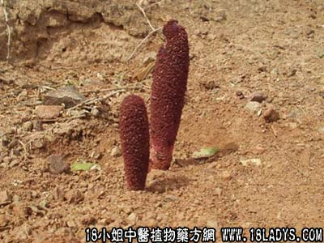

锁阳(中草药名称:不老药)(科目:锁阳科)

锁阳为锁阳科草本植物锁阳的肉质茎。甘、温。归肝、肾、大肠经。
1．补肾助阳：用于肾虚阳痿、遗精等。可单用，或浸泡酒中服用，也可与肉苁蓉、菟丝子、桑螵蛸等同用。
2．益精养筋：用于肝肾不足，筋骨痿弱、行步艰难等，如（虎潜丸）。
3．润肠通便：用于精血亏耗的肠燥便秘等，常与火麻仁、柏子仁、当归等同用。
【药效鉴别】
锁阳性较温燥，壮阳之功较肉苁蓉为胜，益精养血作用不如肉苁蓉。
【药理作用】
有强壮和润肠作用。
【化学成分】
含水溶性的B型甙、还原糖、脂肪油、三萜皂甙和鞣酸等。
【用量用法】
本品10——15g，水煎服。
【使用注意】
阴虚火旺，脾虚泄泻，实热便秘者忌。